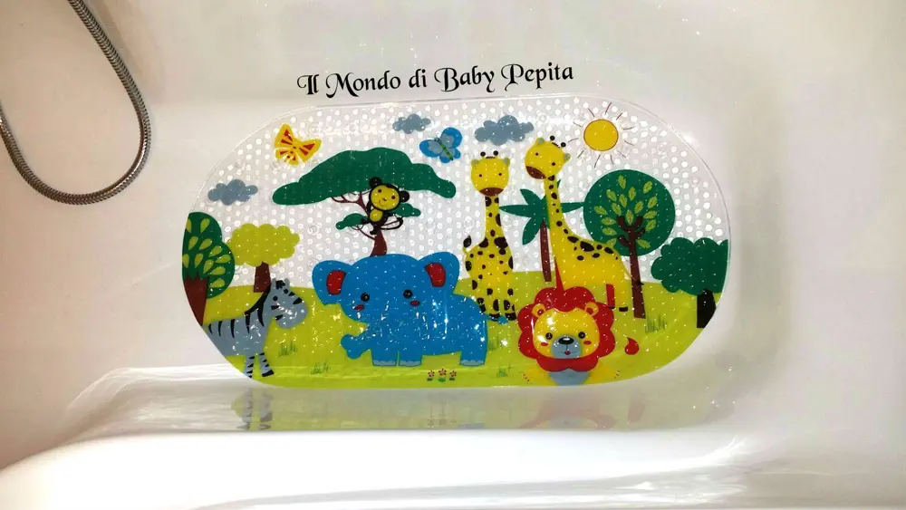
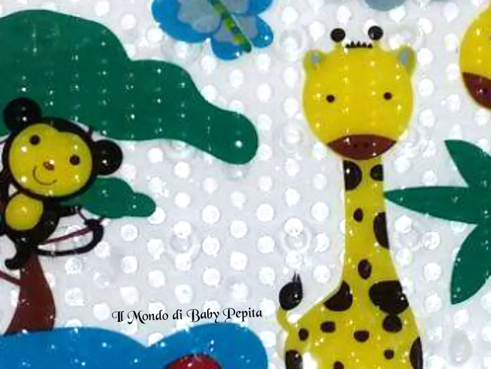
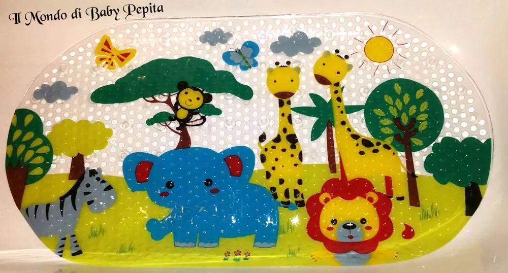

Salinka Ltd - Tappetino antiscivolo da bagno per bambini
 Salve a tutti. .Dal logo qui in alto avrete sicuramente già capito che il protagonista di questa recensione è di nuovo il mondo di Amazon . . E' la mia prima collaborazione con un venditore assai gentile ovvero Salinka Ltd
Salve a tutti. .Dal logo qui in alto avrete sicuramente già capito che il protagonista di questa recensione è di nuovo il mondo di Amazon . . E' la mia prima collaborazione con un venditore assai gentile ovvero Salinka Ltd
Oggi vi parlerò di un articolo davvero grazioso, soprattutto per chi ha bambini in casa il tappeto antiscivolo da bagno . .


Cos'ha di particolare questo tappetino?Niente di eccezionale ma a parte ad essere davvero allegro è sicuro poiché è dotato di numerose ventose assicurano un saldo fissaggio del tappetino sia a terra della doccia che all'interno della vasca da bagno.E infatti io nella vasca da bagno l'ho messo e vi dirò, è proprio carino da vedere.

Realizzato in PVC, e conforme ai materiali standard europeo, cosa molto importante. Quindi sono materiali sicuri e non ha sostanze pericolose e che possano danneggiare i bambini. E' atossico e totalmente privo di naftalina e piombo.Trovo che questa sia una delle caratteristiche principale da prendere in considerazione se si tratta di bambini.
I motivi rappresentati sul tappetino sono, come possiamo vedere, animali all'aperto, molto colorato e allegro..Le misure sono misure standard che possono andare bene per la maggior parte delle vasche . .A me è piaciuto tanto, ed anche alle mie nipotine che spesso si fanno il bagnetto da me :DL'ho lasciato in vasca da bagno fisso così da essere anche un motivo d'arredo. .Prezzo: 17,99 €Se volete altre info o acquistarlo vi lascio il link :https://www.amazon.it/gp/product/B013F3Y5LS/ref=oh_aui_detailpage_o01_s00?ie=UTF8&psc=1In quanto a me seguitemi sui miei social:FACEBOOKINSTAGRAMTWITTERYOUTUBE